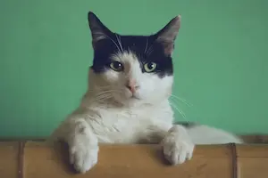
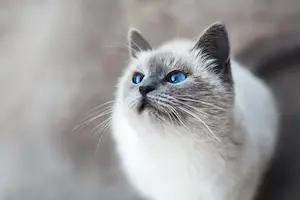

About Us
Welcome to Reid's Cat Adoption Shelter, where compassion meets paws. We are a nonprofit organization based in the Cache Valley, devoted to the rescue, rehabilitation, and re-homing of cats and kittens of all ages. Since opening our doors in 2011, we've helped hundreds of cats find their forever homes, thanks to the support of our community and our incredible team of volunteers.
Our center isn't just a shelter—it's a safe and loving environment where cats can heal, socialize, and prepare for a better life. Whether they come to us from the streets, owner surrenders, or overcrowded shelters, we believe every cat deserves a second chance. We work closely with local veterinarians to ensure all our cats are spayed/neutered, vaccinated, and given the medical attention they need before adoption.
At the heart of everything we do is our belief that love changes lives—both for the cats we care for and the people who adopt them.
Our Mission
Our mission is to rescue, heal, and rehome cats in need. We provide medical care, socialization, and love to every cat, helping them thrive and connect with the perfect family.
Adoption Process
Adopting from us is simple and rewarding. We help match each cat with the right home through a friendly, thoughtful process. From the first meet-and-greet to after adoption, we’re here to support you.
Get Involved
You can help make a difference! Volunteer, donate, or foster a cat to support our mission. Every little bit helps give cats a second chance at a happy life.